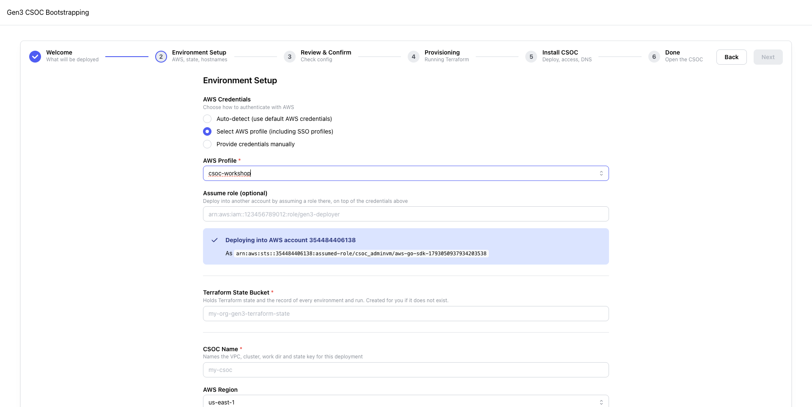
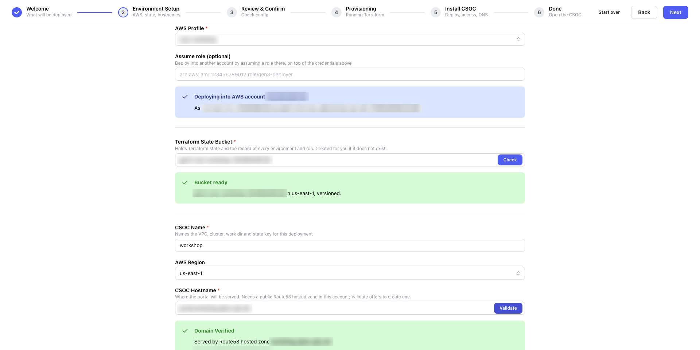

Setup: account, state bucket, names and DNS zone
Choose the AWS account, create the state bucket, name the CSOC, and create and delegate its DNS zone.
Which applies to you?
- You sign in with SSO (recommended), or with access keys: both use A. Choose the account with a profile.
- The state bucket already exists, because you are coming back: see B and Resume after closing the tab.
- The parent domain is in Route 53 in this account, in another account, or managed by central IT: see D. Create and delegate the zone.
- Your DNS is not in Route 53 and cannot be delegated: see Use DNS you manage yourself.
Goal
Tell the wizard where the CSOC goes and what it is called. On this step the wizard creates two things, the state bucket and the hosted zone, and nothing else. Have your worksheet at hand.
Steps
A. Choose the account
- Under AWS Credentials, choose Select AWS profile (including SSO profiles). Do not use Auto-detect (use default AWS credentials): it uses your default credentials, which can belong to another account.
- Under AWS Profile, choose your profile, for example
csoc-admin. Leave Assume role (optional) empty. - Read the blue box. It says "Deploying into AWS account" followed by the account ID. If the number is not the CSOC account's, choose another profile before you continue.
If a yellow box titled AWS SSO session expired appears, your sign-in ran out: Terminal run the command it shows, then press Retry in the box.

B. Create the state bucket
- Scroll to AWS Region, below CSOC Name, and choose your Region, for example
us-east-1. Create bucket creates the bucket in this Region. - Under Terraform State Bucket, enter your bucket name, for example
gen3-csoc-csoc-dev-111122223333. The field starts empty; the greymy-org-gen3-terraform-stateis only a hint. - Press Check.
- If the bucket is new, the yellow box Bucket does not exist appears. Press Create bucket; the box changes to the green Bucket created.
- If the bucket already exists, the green box Bucket ready appears, with Environments in this bucket listing earlier environments. To continue one, press Resume next to it; to start a new CSOC, ignore the list and continue.
- If the red box Bucket not available appears, another AWS account owns that name. Choose another name.

C. Name the CSOC and choose its hostname
- Under CSOC Name, enter your name, for example
csoc-dev. It cannot be changed later. - Check AWS Region again: it must still be the Region you chose for the bucket.
- Under CSOC Hostname, enter the portal's full hostname, for example
portal.csoc.example.org. The zone is this hostname without its first label, soportal.csoc.example.orggives the zonecsoc.example.org. - Under DNS for the hostnames, keep A Route 53 hosted zone in this account.
- Press Validate inside the hostname field. If the zone already exists in this account and is delegated, the green Domain Verified box appears straight away; skip to E.
D. Create and delegate the zone
Delegation is one NS record set in the parent domain's zone that lists your new zone's four name servers. It is what lets the internet, and ACM, find the new zone.
- A yellow box titled No hosted zone yet appears. Hosted zone to create shows
csoc.example.org; leave it. - Under Delegate it from the parent zone using, choose the branch that matches where
example.orgis (from the decision table):- If the parent zone is in Route 53 in this same account, keep The credentials above, the default.
- If it is in Route 53 in another account, choose Profile: followed by a profile for that account, for example Profile: dns-admin.
- If central IT manages it, choose I'll add the NS records myself.
- Press Set up zone and delegation. The wizard creates the zone, and the button changes to Check again.
- If you chose a profile or The credentials above, the wizard adds the NS records itself.
- If you chose I'll add the NS records myself, a yellow box titled Add these records to the parent zone lists them, in this form:
dnsYour DNS provider Send your four records to central IT with the request template, or add them yourself.
csoc.example.org. 300 IN NS ns-123.awsdns-45.com. csoc.example.org. 300 IN NS ns-678.awsdns-12.net. csoc.example.org. 300 IN NS ns-1234.awsdns-56.org. csoc.example.org. 300 IN NS ns-1890.awsdns-34.co.uk.
- Wait for the green box Delegation is live, then the green Domain Verified. The page checks again every 20 seconds by itself; you can also press Check again.
While you wait for central IT
The wizard cannot go past Setup until public DNS finds the zone: Next stays disabled, and the plan, the apply, the bootstrap and the finish all check the zone before they start. Close the wizard; the zone and the bucket stay in your account. When the delegation is in place, resume, and the page continues by itself.


E. Leave Advanced Options as they are
Advanced Options, below the hostname, holds three fields. Keep their defaults:
- Keycloak Hostname:
auth.csoc.example.org. - VPC CIDR Block:
172.24.16.0/20. Change it only if it overlaps a network you will connect to the CSOC's VPC. - Commons data bucket: off. A CSOC does not need one.
Done when: the green Domain Verified box shows "Served by Route53 hosted zone csoc.example.org" with its zone ID, and Next is enabled. Press Next.
Expected result
Time
About 5 minutes from opening Setup to Domain Verified, when the wizard adds the delegation itself. When central IT adds it, this step waits for them.
What's happening
The wizard confirms which account your profile reaches, then creates two resources. The state bucket holds the Terraform state and the wizard's record of every environment and run, which is why you can leave and resume. The hosted zone holds the DNS records for the CSOC's hostnames, and later for every commons.
- The wizard creates the hosted zone
csoc.example.orgin your account. Route 53 assigns it four name servers. - One NS record set, listing the four name servers, is added to the parent zone,
example.org. - A public DNS resolver asked about your zone follows that NS record set and gets an answer from the new zone.
- The wizard sees the answer and shows Domain Verified.
For how your profile becomes the credentials each run uses, and what the bucket contains, see AWS credentials and State bucket and registry.
Troubleshooting
| What you see | What it means | What to do |
|---|---|---|
| Yellow box: AWS SSO session expired, with a command | Your SSO sign-in ran out. The Setup step cannot check anything until you sign in. | In a terminal, run the command shown, for example aws sso login --profile <your-sso-profile>, then press Retry in the box. |
| The blue box shows the wrong account | Auto-detect used your default credentials, or the profile points at another account. | Choose Select AWS profile and the profile for the CSOC account. |
| Red box: Bucket not available | Another AWS account owns a bucket with that name (bucket names are global), or your profile cannot read it. | Choose another name, for example by adding your account ID. |
| The bucket check result disappears right after you pick a profile | The identity check finished after the bucket check and reset it. | Wait for the blue box, then press Check again. |
| Red box: Not delegated: the parent already uses this name | The parent zone already has records under that name; the box lists them. Nothing changed. | Choose another subdomain, or ask the owner of the listed records to remove them. |
| Yellow box: The zone is not delegated yet | The zone exists in your account, but public DNS does not find it yet. | If the NS record set was added, wait: the page checks again every 20 seconds and continues by itself. Check the delegation with dig NS followed by your subdomain. |
| Red box: Domain Validation Failed | No public zone in this account serves the hostname or a parent of it. | Check the spelling of the hostname, and that the blue box shows the CSOC account. |